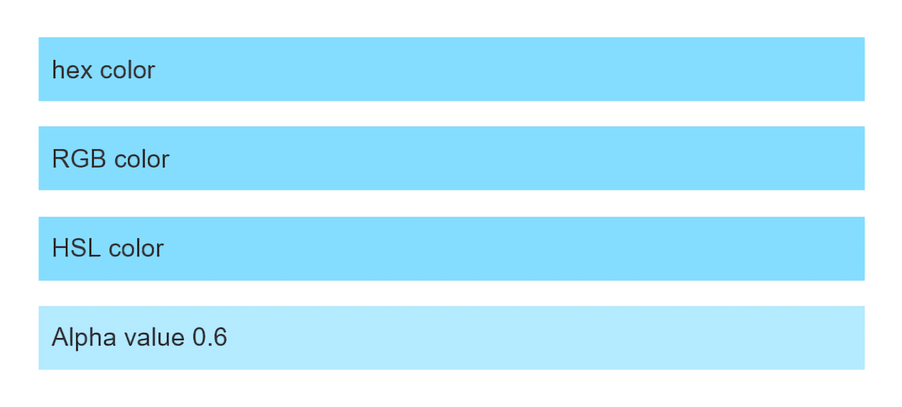
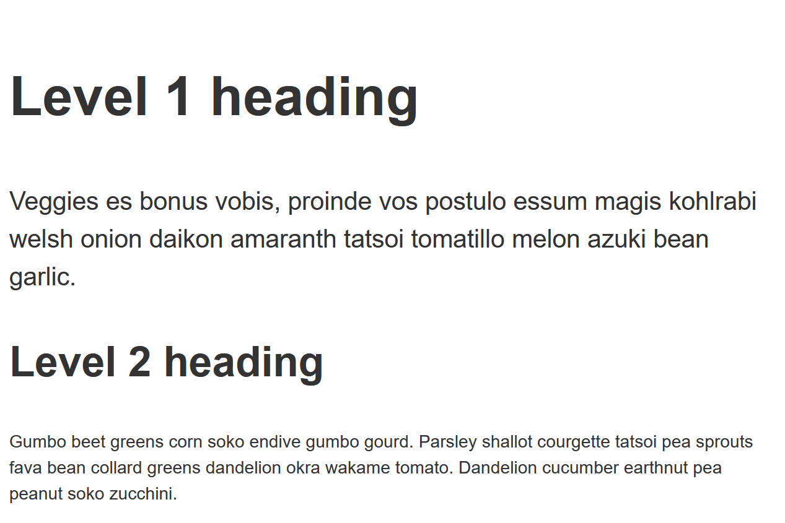
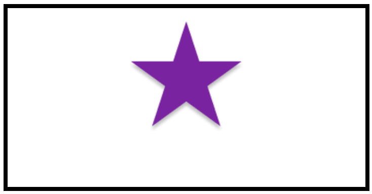

The aim of this task is to help you check your understanding of some of the values and units that we looked at in the lesson on CSS Values and Units.
Note: You can try out solutions in the interactive editors below, however it may be helpful to download the code and use an online tool such as CodePen, jsFiddle, or Glitch to work on the tasks.
If you get stuck, then ask us for help — see the {{anch("Assessment or further help")}} section at the bottom of this page.
In this task, the first list item has been given a background color using hex color codes. Your task is to complete the CSS using the same color in different formats, plus a final list item where you should make the background semi-opaque.
You can find conversions for the hex color at this link. You need to figure out how to use the values in CSS.

Try updating the live code below to recreate the finished example:
{{EmbedGHLiveSample("css-examples/learn/tasks/values/color.html", '100%', 1000)}}
For assessment or further work purposes, download the starting point for this task to work in your own editor or in an online editor.
In this task you need to set the size of various items of text.

Try updating the live code below to recreate the example as displayed in the image:
{{EmbedGHLiveSample("css-examples/learn/tasks/values/length.html", '100%', 1000)}}
For assessment or further work purposes, download the starting point for this task to work in your own editor or in an online editor.
In this task you need move the background image so that it is centered horizontally, and 20% from the top of the box.

Try updating the live code below to recreate the example as displayed in the image:
{{EmbedGHLiveSample("css-examples/learn/tasks/values/position.html", '100%', 800)}}
For assessment or further work purposes, download the starting point for this task to work in your own editor or in an online editor.
You can practice these examples in the Interactive Editors mentioned above.
If you would like your work assessed, or are stuck and want to ask for help: